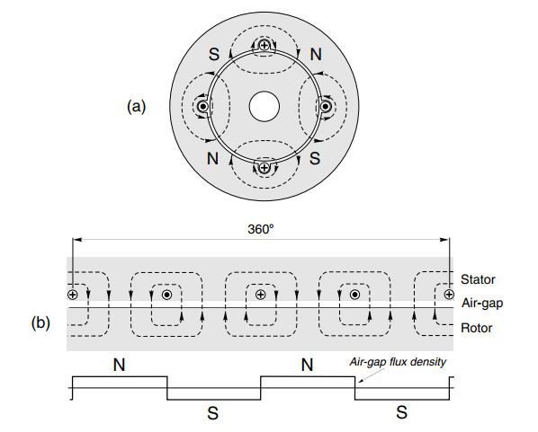

电机与驱动读书笔记（感应电机基础）
在开始研究感应电机时，我们会尽量简化问题，例如：在研究定子磁场时会忽略转子磁场的存在。最后再将所有的结论综合在一起，而不是一上来就给出复杂的概念。
如果给定额定功率和额定转速，感应电机和直流电机的重量和体积没有太大区别，制造所需的材料也基本一致，但是感应电机的制造更加简单，所以成本也更加低廉。感应电机的定子电流不仅要提供励磁，还要提供电机做功所需的能量。除此之外，感应电机和直流电机还有以下区别：
- 电源类型不同：交流，直流
- 感应电机的励磁磁场是旋转的，而直流电机的励磁是静止的
- 感应电机的转子和定子表面光滑，而直流电机则有明显的磁极
定子绕组产生的旋转磁场
首先假设转子对气隙磁场没有影响，电机有两对磁极、输入三相电源。
如上图，电机定子绕组产生的磁场随时间变化，这里截取三个时刻磁场的分布：
t=0：t=5ms：假设电源频率是，即磁场旋转 所需的时间t=10ms：磁场旋转 所需的时间，此时输入电流变化半个周期，磁场极性刚好相反。
从上图可以看到，磁场变化的规律与电机的极数（）相关：电源变化一个周期，磁场旋转 个周期。，并且与位置有关，在一个圆周上呈现正弦分布，也被称为磁通行波。其幅值随位置的变化如下图所示：

极间距：励磁 的最小距离。在一个电源周期内，磁场旋转（行波前进） 个极间距。 于是磁场的转速与电源频率就会有如下关系：
如果我们可以调整电源频率，我们就可以控制定子磁场的转速了，这是一种策略。
单相绕组的磁场
简单起见，假设电机有两对极，在其中某一相绕组中取一组绕组（一个槽）分析，如下图：

由上图可见，单个绕组产生的磁通密度近似于方波，而我们需要接近正弦波的磁通密度，所以可以通过在相邻的槽中增加同相的绕组实现：
由于磁场的叠加（每增加一个入向，磁通就会增加一个台阶，每增加一个回向，就会减少一个台阶），整个磁通的分布在圆周上就类似于正弦波形，如果要得到完美的正弦曲线，则需要绕组的分布也足够平滑。但是这在实际设计中是不可能做到完美的。
然而，通过双层绕组，我们可以得到较为满意的波形（书上说绕组电流的出发一侧在槽的顶端、回流一侧在其他槽的底端，但是应该是绕组应该是叠着放就好了）。双层绕组的线圈宽度明显小于极间距，而短距绕组则有效增加了磁通密度的阶梯数，使波形更接近于正弦曲线，见下图：
三相叠加
考虑到三相叠加，就会得到一个频率不变但是幅值更大的磁通密度分布。以后的符号假设绕组垂直纸面向里为，向外则为。可以得到各相电流的变化情况如下图所示：
如果要使定子磁通能顺利地旋转起来，则其在槽中的分布顺序也应如上图左侧顺时针（或逆时针）所示。 若按顺时针接线，则黑色的虚线可以表示最终的等效磁通的变化。如果对换某一对电源接线，电机就会反转。
需要注意的是，上面六极电机采用了错槽设计，这种方案在电机设计中比较常用，具有以下好处：
- 抑制电机产生的某些谐波分量，从而减少电机的噪声和振动，
- 可以降低电机的铁损耗和铜损耗，提高整个电机的效率
- 防止电机出现过电压和欠电压等问题。
- 减少相邻线圈之间的漏磁互感系数，从而提高电机的性能和效率。
主磁通与漏磁通
通过上面的过程，我们了解到电机气隙中的磁通密度随时间变化情况如下：
但并不是所有的磁通都经过定子-气隙-转子-气隙-定子这条回路，会有部分磁通直接在定子（转子磁通也存在）内部形成回路。漏磁过大会影响电机的各项性能指标，但是太小却不利于电机的启动。
主磁通的幅值
因为主磁通在旋转，定子中的导体也会切割磁感线，从而会产生反电动势。并且某一位置的反电动势的变化趋势滞后于其磁场变化两个极间距。但就一相绕组考虑，其电压平衡方程如下：
等效电路如下：
考虑到定子电阻一般很小，可以忽略，定子反电动势近似等于输入电压，而反电动势正比于磁通密度和电压频率（磁场转速转速）的乘积，由此可知，定子绕组的磁通大概正比于输入电压与频率之商：
其中 取决于绕组线圈的拓扑结构和分布情况。
目前为止，定子线圈中的电流是比较大的，但是几乎全部用于建立磁场，也就是常说的磁化电流。气隙越小，磁通越小，反电动势越小，磁化电流则越大。
磁化电流
磁化电流与气隙相关，磁化电流不做功，所以一般气隙越小越好。尽管气隙小会使得磁化电流减小，但在四极电机中，磁化电流仍然能达到负载电流的50% 左右（因为绕组电阻很小），在六极或八极的电机中会更高。磁化电流与输入电压的相位关系如下：
转子部分
常见的转子结构有两种形式：接线式和鼠笼式。其中接线式电机需要额外的电源，而鼠笼式因为制造简单，所以应用更加广泛，下面两幅图分别是鼠笼式的转子和绕线式转子的示意图：
后面的笔记均以鼠笼式转子为例分析。
滑差
在鼠笼式电机中，转子中要有电流，则必须要切割磁感线产生感应电动势。于是，转子相对于定子存在一个转速差，我们称之为滑差，表示转子比定子慢的比例：
滑差，滑差为 时表示电机堵转。
感应电动势
转子导体切割磁感线产生电动势，其幅值正比于滑差（其频率也是）：
由于磁通密度在圆周上按正弦分布，所以转子导体中的电动势大小也是按正弦分布：
因为转子导体两端分别是短接的，所以其中的电流也会按下图分布，其中，比较粗的深色区域表示电流很大：
小滑差分析
当滑差小于 时，因为感生电动势的频率较低，转子电路中的电感可以忽略不计，转子电流与感应电动势与主磁通近似是同相的，其产生的转矩为：
因为磁通是由电源决定的，如果电源的电压和频率不变，则磁通不变，能改变的只有转子电流（也就是转子感应电动势），最终能改变的就只有滑差了。
大电机的满载滑差一般小于，小电机的不超过。在下图中 间可以近似认为是线性的。
如果滑差总是很大，电机可能会过热。这就要求，在后面，电机虽然有两个相同转矩的工作点，但是只能选择右边的那个。
大滑差分析
随着滑差的增大，转子感应电动势的频率也会增加。于是转子导体的电感（感抗）不能再被忽略，导体的阻抗随滑差增加，导致其电流的增速是趋缓的：
同样，因为阻抗的增加，将会导致转子导体中的电流滞后于感应电动势一个角度。
于是我们得到一个一般化的方程（磁通与电流的乘积再乘以夹角的余弦表示转矩的有效值）：
随着滑差的增加， 减小的速度逐渐大于 增加的速度，于是必然存在一个转矩的最大值。
转子电流对磁场的影响
在感应电机中，任何主磁通的减小，都会造成定子反电动势的减小，从而增加定子电流，阻碍磁通继续减小，达到新的平衡。因为定子绕组阻抗很小，所以电流的变化是比较大的。
转子的磁场
因为转子电流的频率取决于滑差，所以可以认为在转子中，其电流产生的磁场以 的速度旋转，而转子本身以的速度旋转，所以转子电流产生的磁场相对于定子其实也是以 的速度进行旋转的，方向刚好与主磁通相反（肯定是阻碍主磁通变化了）。
因此，一旦考虑转子的因素，定子中的主磁通势必会减小，从而造成定子电流的增加，而变化多少却决于滑差的大小。在电机起动时，因为滑差很大，其主磁通一般只有额定转速时的。
定子电流-转速特性
在电机空载时，除了小部分的铜耗和铁耗以外，大部分定子电流都不会做功，所以其电流与电压的相位差别近，主要是磁化电流。而随着负载的增加，磁化电流近似不变，做功的电流分量持续增加，于是电压与电流之间的相角差减小：
当然，上图在小滑差时比较准确。在大滑差（启动、堵转）时定子电流能达到额定负载时的五倍。高启动电流也是鼠笼式电机的缺点之一，因为高启动电流并未产生相应的高转矩。下图表示电机从空载逐渐增加负载到堵转时，其定子电流的变化情况。
合并转矩-转速和电流-转速的特性曲线，可以看到，在电机起动时，单位安培所产生的转矩是很低的：
关于更多的感应电机特性和等效电路，将会在后面两篇笔记中学习。